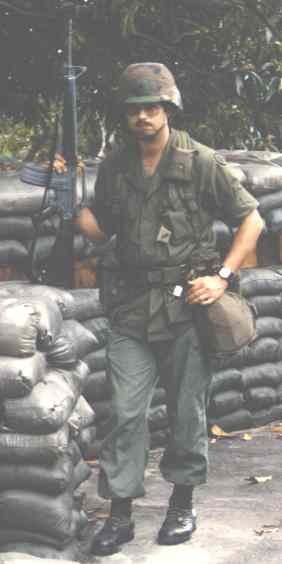

Maybe it's because I grew up in such a small neighborhood. Or mabye it is just because he was a really cool guy. George had a rough childhood, but this isn't the place for that. Be all that you can be? He sure did that.
The class clown had few options. He chose the Army. Having been excited about building a radio in class at school, he chose Radio Repairman. Good choice. Then one night at work, there was a computer issue. He stayed up all ngiht, but he got it up and running. (Electronics are grand, until they break down. )
The Army knew an asset when they saw one. George was smitten with computers. And he obviously had talent. The Army sent him for certification after certification. Computers were a passion, but not his only passion.
George bought an old (shhhhhh, and broken down) Mustang. For car buffs, it was a 1975 Mustang II. It didn't look like much, and the original color was dark green. George threw himself into fixing it up, and it began to really take shape. This image is part of the way through the mods. And if you note the two ponies on the grill, there is a story to that.
George was at Fort Lewis, it was dark, and a Hummer with MPs opened up Unbridled Fury like a can of sardines. The Army paid to have it put back together, and George was fine. They weren't in a car chase, but a Hummer can do a lot of damage even at slow speeds.
The damage required that the grill would need to be replaced, but the resiliant pony on the grill was in tact. So, George added it to the new grill. But this version of the car is only part of the transformation that it would go through. More on that later.
George had a good sense of humor, and he even had to laugh at that mishap. They wouldn't make eye contact with him after the accident. Much of George's childhood was not a happy one, but he had a love of life, and he loved to have fun. He was even quite the joker. With a last name like Ftikas, it gave him the perfect opportunity when the Army sent him off for some communications training. George put on this thick accent. No, not a Hoosier one. Nobody was quite sure where this heavily accented man, who didn't speak English very well, was from. But he sure didn't seem like he should be defending America with communications. It wasn't until the last day that he walked into the classroom, sounded just like the midwest man he was, and they all had a good laugh.
Computers and Mustangs were not the only things to occupy his time. George also developed a love of ham radio. He was n7tqz. I am not sure where he found time for all that he did. He made our mom's first computer. He ran the website for the his own site, the ham radio club he was involved with, a Mustang page, and a section for his graduating high school.